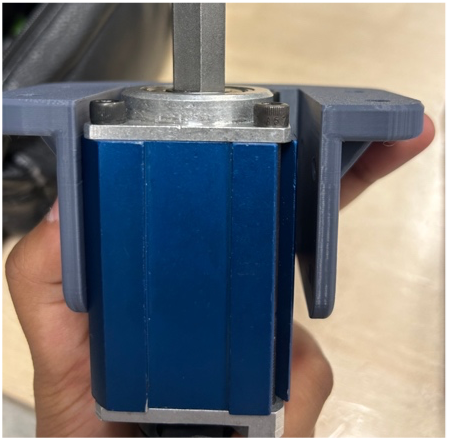
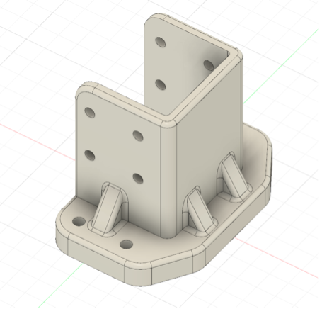
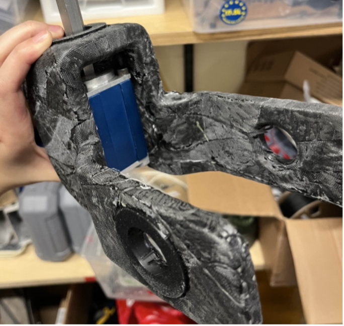
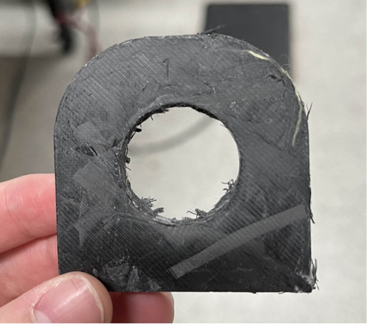

Robotics for Space Exploration (RSX) is a design team dedicated to building a rover for extraterrestrial exploration. With sub-teams specializing in the arm, science, electrical, software, and mechanical systems, I contributed as a member of the Arm Mechanical Sub-Team, focusing on gearbox integration and weight reduction strategies.
As part of the arm iterations, new gearboxes were integrated into the system. I was responsible for designing the gearbox mount, which required precise measurement and evaluation of dimensions, screw hole placements, and thickness to ensure both durability and accurate fitting. Multiple iterations were developed, as the initial design proved oversized, and adjustments were made to refine the fit. To strengthen the component, I modified wall thicknesses and applied fillets to critical edges, improving both structural integrity and printability.
 This task advanced my Fusion 360 skills, emphasizing the importance of accuracy, precision, and consideration of 3D printing tolerances in mechanical design.
The team is determining ways to reduce the arm's weight. To achieve this, carbon fiber was used, with optimized layup techniques, to:
This was done as opposed to opting for a stronger, more expensive material. Several methods were explored, beginning with wrapping strips around 3D-printed parts and sealing them using vacuum bagging. The process later progressed to cutting fibers, placing them into molds, and sealing them under pressure. While pressure sealing was limited to flat geometries, it produced stronger, more compact, and cleaner finishes compared to earlier approaches. This experience deepened my understanding of composite manufacturing and demonstrated how cost-effective methods can achieve weight reduction without sacrificing performance.
 